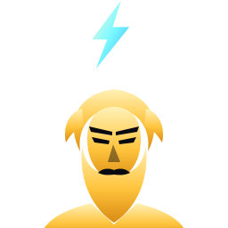
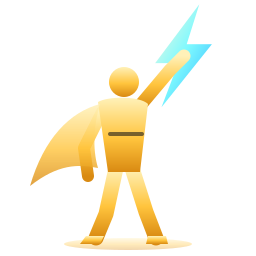
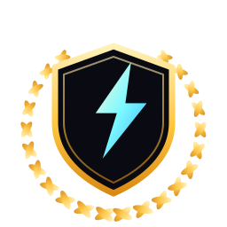

בחירת לוגו ל-Demigod
שלוש אפשרויות. כל אחת מוצגת גדולה, ואחרי זה בגודל של אייקון באייפון. תכתוב לי אות: א, ב או ג.
א פסל חצי גוף
אל עם זקן, ברק מעל הראש. הכי "פנים", הכי מיתולוגי.

180
60
29
ב דמות מלאה עם יד מורמת
דמות בגלימה שמרימה ברק. הכי תנועתי, מרגיש כמו גיבור.

180
60
29
ג סמל מופשט
מגן עם ברק ועלי דפנה. הכי נקי ותואם לסמלי הדרגות.

180
60
29